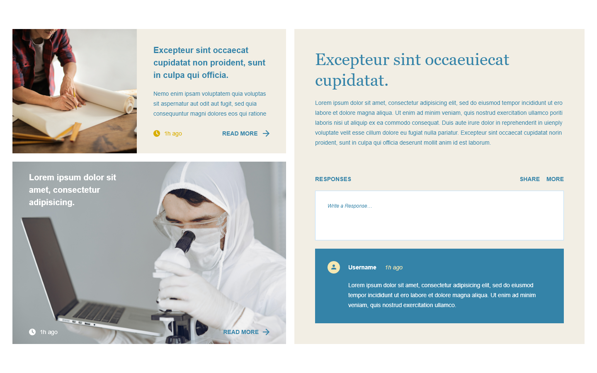
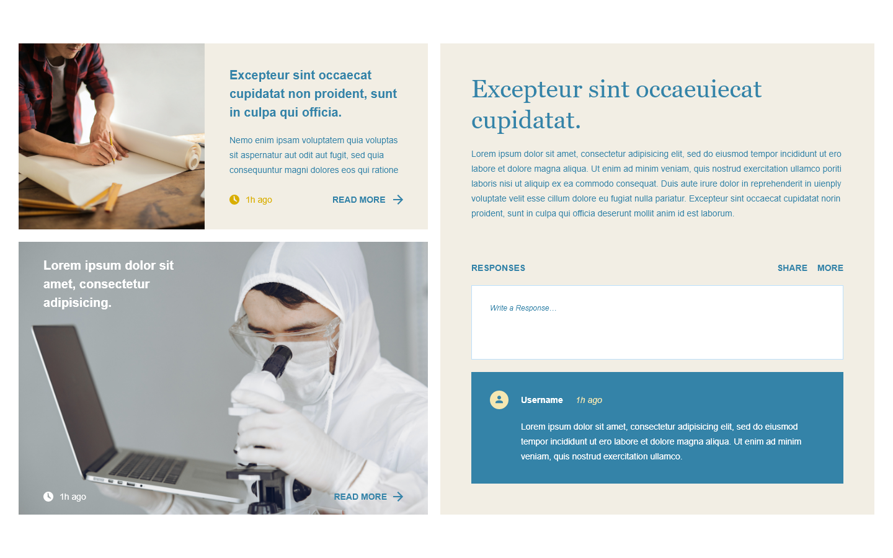

WHAT IT IS
Product
steamNETWORK is a blog-based platform catered to students having another resource into figuring out their prospective careers utilizing: communication. The purpose of steamNETWORK is to facilitate connections and close the gap between what to expect and how to get there when pursuing Science, Technology, Engineering, Art, and Mathematics (STEAM) careers.
The idea is for students to have the opportunity to learn more from Experts in careers that they’re interested in. This is an entirely online experience, with different features to encourage engagement and new content to explore frequently. This is primarily Florida-based to uplift members of the community.
The key to the success of the steamNETWORK platform is through volunteer Experts that can share their experiences and journeys and facilitating engagement with students and Educators.
Main features are open to everyone and depending on users’ accounts there are different features available for use and communication. They are categorized by Experts, Students, Educators, and eventually Organizations.

Main Features
Discussion Forums: Forums are available for users to submit questions as topics with a title, and they're able to explain in more detail in the body text. Users can interact with the post and give their insight to questions, saving/bookmarking the discussion, and sharing it. Posts by the original user are included on their profile, as well as comments that are made on any post (similar to Reddit or Quora).
Blog Posts Comments: Experts can volunteer or be reached out to to be asked to conduct an “interview”. A member of the steamNETWORK team asks curated questions to the Expert and creates blog posts of their answers. These blog posts introduce the Expert and can be up to 10 or more questions at a time or it can be 3-5 open-ended questions. This is to give insight into their experiences with their career and answer frequently asked questions.
Attending Live Webinars: Live webinars are conducted with a member of the steamNETWORK team that allow for live attendance from interested users as a Q&A segment from Experts. Individual students are welcomed to attend, as well as Educators that request a speaker for specific topics and real-life applications. Webcams/microphones are encouraged for engagement, but steamNETWORK team members may also mute attendees and/or disable webcams for inappropriate behaviors that can result in an account ban.
Career Interest Assessments: Career Interest Assessments can be in-house applications that give insightful questions to provide a range of possible career opportunities that the user may be interested in. There are also many resources available, and the assessment feature may be a curated list of resources for users to take assessments, such as Career One Stop powered by O*NET Interest Profiler.
News Feed: The news feed shows partner organizations' up-coming events and conferences as organizations are able to upload their flyers/create text-posts and interact with the community on their post. It will also list volunteer opportunities available, and programs that encourage career growth such as internships, mentorships, and job shadowing opportunities in Florida.
Account Types
Breakdown of functionalities by the type of account that's chosen when users sign-up.
Experts
- Verification
- Networking with other professionals
- Interviewee for blog posts
- Discussion commentators
- Live webinar speakers

Students
- Discussion post commentators
- Discussion post creators
- No private chat functionality
- Career interest assessments
- News feed engagement

Educators
- Make requests for Expert speakers to their classrooms
- Participate in discussion/blog posts
- News feed engagement

Organizations
- Make event posts on the news feed
- Partnership perks
- Advertisement

 
